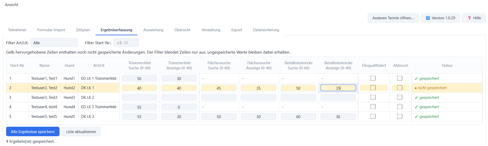
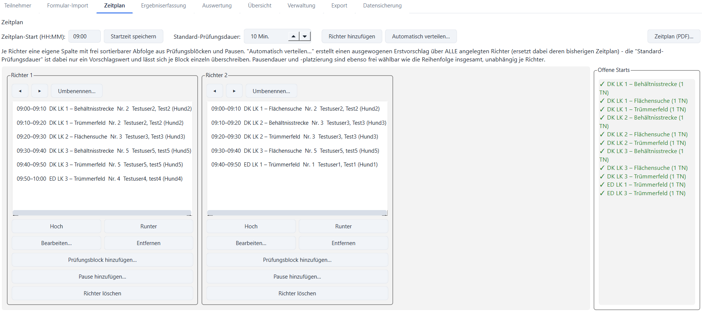
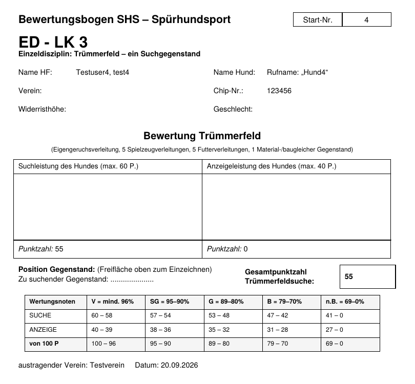

Termine
Anlegen, öffnen, zwischen Terminen wechseln – und abgeschlossene Termine vollständig löschen.
Für die Prüfungsleitung im Spürhundsport
Von der Meldung der Teilnehmer über Zeitplan und Bewertungsbögen bis zu Rangliste, Etiketten und Statistik. Das Programm ersetzt die LibreOffice-Datei „SHS Prüfungsprogramm“ samt Serienbrief-Vorlagen.
Wertnoten wie in der „Hilfstabelle Wertnote“ – Einzeldisziplin, 0–100 Punkte

Vom Anlegen des Termins bis zur fertigen Rangliste. Bewertungsbögen und Listen druckst du kurz vor dem Prüfungstag, Ergebnisliste, Etiketten und Statistik danach.
Wertnoten und Rangliste werden nach denselben Regeln berechnet wie in der bisherigen LibreOffice-Datei.
Anlegen, öffnen, zwischen Terminen wechseln – und abgeschlossene Termine vollständig löschen.
Startnummern werden vorgeschlagen, der Zahlungsstatus ist mit einem Klick gesetzt. Stammdaten aus einem früheren Termin übernehmen.
Ausgefüllte Meldeformulare (PDF, Word, Foto) per KI-Assistent in eine CSV umwandeln und importieren. Den passenden Prompt liefert das Programm mit.
Tagesablauf je Leistungsrichter. Automatischer Verteilungsvorschlag oder Planung von Hand, die Zeiten rechnen mit.
Such- und Anzeigeleistung je Disziplin, auch Disqualifikation und Abbruch. Ungespeicherte Zeilen sind markiert.
Wertnote und Rangliste je Leistungsklasse, inklusive „nicht bestanden“ unter 70 Punkten in einer Disziplin.
Teilnehmerzahlen je Art und Leistungsklasse und die Zahl der benötigten Leistungsrichter.
Bewertungsbögen in allen 12 Varianten (ED/DK × LK 1–3), Ergebnisliste, Etiketten, Statistik, Richter-Bedarf, Zeitplan.
Alle Termine in einer ZIP-Datei sichern und wiederherstellen, auf Wunsch mit Passwort (AES-256).


Die Regeln bleiben gleich, der Ablauf wird einfacher: Eingabemasken statt Tabellenblätter und Formeln. Die Umstiegsanleitung zeigt, was gleich bleibt, was sich ändert und wie du in fünf Schritten wechselst.
SHS-Pruefungsprogramm\Termine in deinem Benutzerprofil. Das Programm schickt keine Teilnehmerdaten ins Internet – nur „Nach Updates suchen“ fragt auf deinen Klick hin bei GitHub nach der neuesten Versionsnummer.Für größere Prüfungen tragen mehrere Richter am Prüfungstag gleichzeitig Ergebnisse über den Browser ein – auf Tablet, Handy oder Laptop, jeder mit eigenem Benutzerkonto. Termin, Teilnehmer, Zeitplan und Druck bleiben in der Desktop-App.
Die Web-Version läuft als Container und braucht etwas technische Einrichtung. Für die meisten Vereine reicht die Desktop-App allein.
Einrichtung der Web-VersionSHS-Pruefungsprogramm-Setup-X.Y.Z.exe laden.Im Programm über Version → „Nach Updates suchen“. Die neue Version einfach über die alte installieren – deine Termine bleiben erhalten.